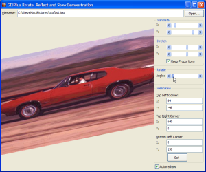
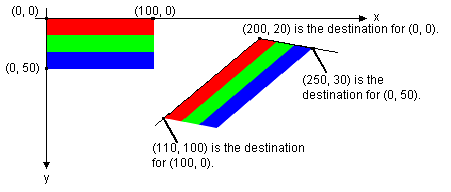
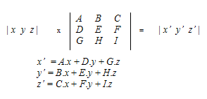
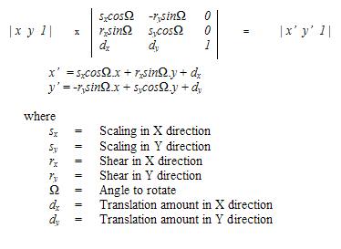

GDIPlus Rotate, Reflect and Skew (16K)
GDIPlus Rotate, Reflect and Skew (16K)
 28 Mar 2003
28 Mar 2003
First Posted
 GDI+ Type Library (GDIPlus.TLB)
GDI+ Type Library (GDIPlus.TLB)

Scale, Rotate, Skew and Transform Images using GDI+
High performance, high quality image manipulation.
GDI+'s image rendering is considerably more powerful than the basic bitmap transfer functions provided under GDI. You can perform high-quality rotation, scaling and skewing with no additional lines of code: and better still the functions run very fast on half decent machines.
Getting Started
As with the other GDI+ samples at the site, you'll need the GDIPlusWrapper and the GDI+ Type Library to run this sample. The code also requires VB6.
Scaling, Skewing, Rotating, Transforming
This article isn't too hard to write about because to do all of these things using GDI+ you just need one call: a version of the DrawImage function which allows you to specify 3 points indicating where the top left, top right and bottom left corners of the image are mapped to when the image is displayed. In the GDI+ library, this is called DrawImageAffine and has versions for integer (L) as well as real (F) values.
This image from the GDI+ documentation illustrates what DrawImageAffine does to the image based on the points:
Skewing a Bitmap using DrawImageAffine
Using this information, and a little bit of matrix theory, we can provide any combination of scaling, transformation, rotation and skew.
The Matrix
The matrix is a helpful construct that keeps us docile whilst we provide sufficient heat energy to sustain a massive AI installation that has taken over the planet (hmm, let me see, can anyone just confirm what the Second Rule of Thermodynamics was again??).
In any case, matrices are particularly useful for transforming, scaling and rotating a point in space. Matrix algebra is used to specify most of these sorts of operations because it provides a more compact way of representing a transformation that affects more than one point at a time. This diagram demonstrates how matrix multiplication works:
Multiplying a point by a matrix
In this case we're considering 2D space so a point is represented by its x and y dimension. It can be demonstrated that all rotation, translation, scaling and shearing can be accomplished by adding an extra dimension to the point and multiplying it by a matrix as follows:
Rotating, Scaling, Transforming and Shearing a point using a matrix
The sample application applies these formulae, excluding the linear shear factors, to the x and y points and allows you to arbitrarily set the positions of each of the three points.
On top of that, it sets the graphics InterpolationMode to InterpolationModeBicubic, which provides high quality bitmap scaling, and the SmoothingMode to SmoothingModeHighQuality for smoothing the results of the shear. You should find that unless you're working with a very large bitmap that most effects work in near real time, which is very impressive.